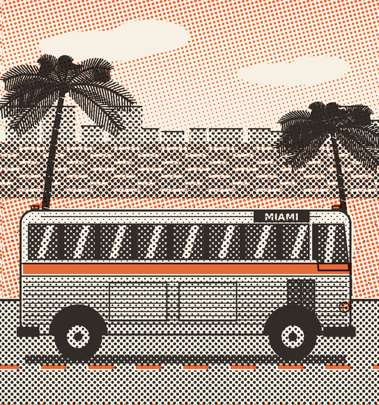
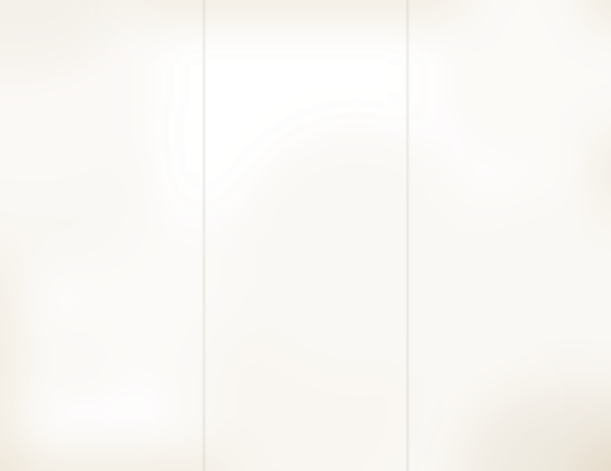

BEFORE YOU GO
Riding with
Silver Palm
Silver Palm
Radios played with an earphone only, please.
Hats and parcels ride in the overhead rack.
Smoking in the last four rows only.
Rest stops about every two hours. Meal stops are marked in the timetable.
Keep your ticket stub until Miami.
Two bags checked free, up to 150 pounds.
AT THE NEW YORK TERMINAL
Shoeshine standLower level
Coin lockers25 cents a day
Lunch counterOpen all night
Ticket windowsDay and night
HELP WANTED
Dishwasher, nights. Steady work. Apply at the lunch counter.
THE COASTAL ROUTE
New York to Miami
By the Atlantic shore, about 1,250 miles.
STOPMILES
Connections from Texas and the West
New York, N.Y.0
Newark, N.J.10
Philadelphia, Pa.92
Wilmington, Del.120
Baltimore, Md.190
Washington, D.C.230
Richmond, Va.335
Rocky Mount, N.C.455
Florence, S.C.605
Savannah, Ga.765
Jacksonville, Fla.905
Daytona Beach, Fla.995
West Palm Beach, Fla.1,180
Fort Lauderdale, Fla.1,225
Miami, Fla.1,250
New York: Midtown terminal, W. 42nd St.
Miami: Downtown terminal, near the bay.
Printed in U.S.A.Form 69-S
SILVER PALM
COACHES
New York, the Carolinas, Florida
Florida
THROUGH
EXPRESS
EXPRESS

TIMETABLE AND
MEAL STOP GUIDE
MEAL STOP GUIDE
Leaves New York every night at midnight. No change of buses.
Effective April 27, 1969Free. Take one.
Tickets and seats at any Silver Palm window. Times are local and subject to change.

